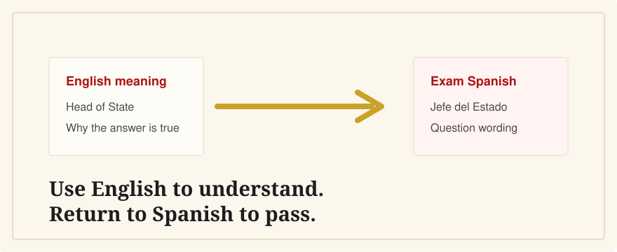

Do I Need Spanish To Pass the CCSE?
Last verified: June 5, 2026
Yes. The official CCSE exam is written in Spanish. English can help you study, but it does not replace the Spanish you will see on exam day.

You do not need advanced Spanish for the CCSE, but you do need enough reading Spanish to understand short official questions and answer options. The exam questions are designed with accessible wording, and Instituto Cervantes provides a multilingual glossary, but the exam itself is not in English.
What Spanish the Exam Uses
Instituto Cervantes says the CCSE questions use contemporary peninsular Spanish. The questions are short, and the official description says the texts are adapted so most grammar and vocabulary should be accessible to candidates. Still, you need to recognize words like derechos, deberes, Gobierno, Congreso, comunidad autónoma, and ayuntamiento.
CCSE Spanish Is Different From DELE Spanish
The CCSE is a knowledge test, not a general language exam. It does not test speaking, listening, or writing. DELE A2, by contrast, is a Spanish-language diploma with reading, listening, writing, and speaking parts. Many nationality applicants need both, but they measure different things.
Where English Helps
English is useful before the exam because it lets you understand why an answer is correct. If you only memorize Spanish sentences, a small wording change can throw you off. If you understand the idea in English and then connect it back to the Spanish, you are less dependent on pattern matching.
That is the role of CCSE English: Spanish and English side by side, with plain-English explanations. It is independent and not affiliated with Instituto Cervantes or the Spanish government.
What To Practice
- Read each Spanish question before looking at the English.
- Mark recurring civic vocabulary and learn it as vocabulary, not trivia.
- Practice true/false wording carefully; negatives and legal terms can be easy to miss.
- Take timed 25-question mock exams in Spanish once you are near your exam date.
Related Guides
- What is the CCSE exam?
- CCSE vs DELE: what's the difference?
- Best CCSE study resources for English speakers
- How hard is the CCSE?
Sources
- Instituto Cervantes: CCSE language, format, and duration
- Instituto Cervantes: CCSE preparation materials and glossary
- Instituto Cervantes: DELE A2 exam structure
Use English to understand the material, then keep returning to the Spanish wording you will see on exam day.